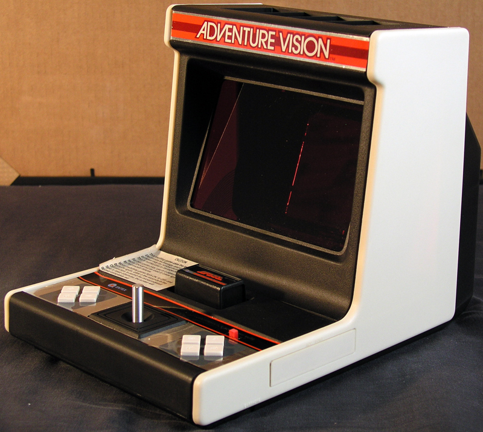
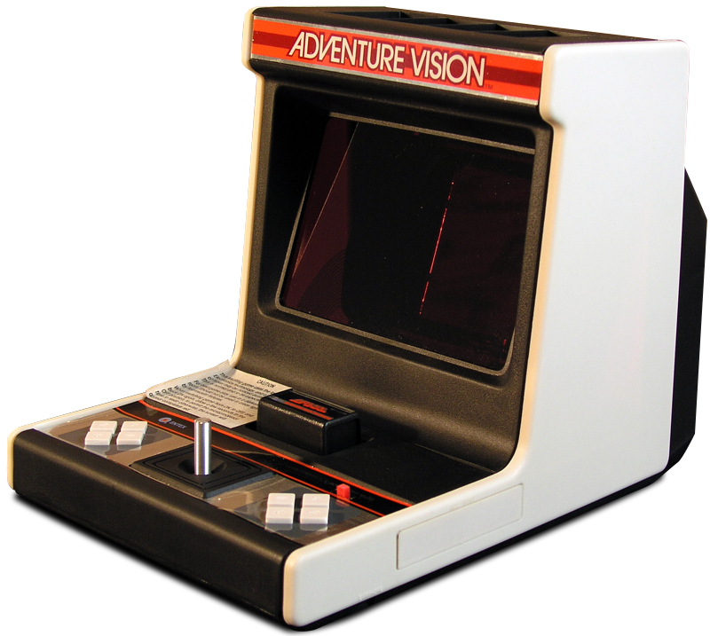

Entex Adventure Vision
A 150-pixel-wide red display synthesized by a spinning mirror sweeping a vertical column of 40 LEDs — a mechanical-scan display in a battery-powered handheld

Overview
The Entex Adventure Vision (1982) is a handheld tabletop game console whose display is a 150×40 monochrome red raster, synthesized by a spinning flat mirror sweeping a single vertical column of 40 red GaAsP LEDs. An Intel 8048 microcontroller strobes the LEDs in patterns synchronized to the mirror's angular position; the user's persistence of vision blends the 40-LED column into an apparent 150×40 pixel image at approximately 15 frames per second. A separate National Semiconductor COP411L sound chip at 52.6 kHz handles audio, with a headphone jack. The player holds the bulky 13.25 × 10 × 9 inch (337 × 254 × 229 mm) device with two hands: a 4-direction digital joystick sits in the center, with 4 physical buttons arranged symmetrically — 2 to the left, 2 to the right — so left- and right-handed players each have a fire button and a secondary button. Power is 4 × D-cell batteries (with AC adapter jack); the mirror motor is a significant power draw.
The Adventure Vision was designed by Robert 'Bob' McCaslin for Entex Industries of Compton, California (303 West Artesia Blvd), with case design by Ortega Orr and electronics/programming by Steve Meadows. Larry Karr and Andy Barber programmed the COP411L sound chip. Four cartridges shipped at launch era: Defender (the pack-in), Super Cobra, Turtles, and Space Force. Wikipedia's infobox claims 50,757 units produced (citing Forster 2005), but Wikipedia's body text and handheldmuseum.com — collector sources with direct field knowledge — both put the figure at approximately 10,000 systems and ~1,000 each of the three non-pack-in cartridges. The 10,000 figure is more credible given collector consensus and surviving-unit rarity; the 50,757 figure should be treated with skepticism. MSRP was $79.95 (Wikipedia) / $79.99 (handheldmuseum.com). Entex folded in the early 1980s under competition from home computers and cheaper LCD portables.
The Adventure Vision's rotating-mirror mechanical-scan display is the only consumer electronics device ever to use this display paradigm. It is fundamentally different from CRT (oscillating electron beam drawing on phosphor), LCD (fixed pre-drawn segments), and the Vectrex's vector display (oscillating electron beam drawing lines on a phosphor, already in the museum). Its only spiritual descendant is Nintendo's 1995 Virtual Boy, which used a similar mirror/LED principle in a head-mounted form factor. Today, ~100 known operational units remain (per Destructoid 2009 'Bit Museum #4' article); boxed systems sell in the thousands of dollars. AdventureVision.com maintains an 'Owner's Pride' gallery of collector systems, and MEGA (Museum of Electronic Games & Art) released the first homebrew/demo ROM at the Revision demoparty in 2013.
Deep dive
Entex Industries, Inc. was founded in 1970 by G.A. (Tony) Clowes, Nicholas Carlozzi, and Nick Underhill; the name is derived from 'NTX' (Nick + Tony + X). Based at 303 West Artesia Blvd, Compton, California, Entex produced a string of 1970s electronic handhelds and tabletop games. The Adventure Vision was their flagship 1982 product — a technically ambitious handheld that attempted to deliver a true pixel-addressable raster display in a portable form factor, years before the technology existed to do so affordably with LCDs. Robert 'Bob' McCaslin designed the system; adventurevision.com hosts 'Bob McCaslin's own personal pictures from when he was developing the system' (a prototype gallery at adventurevision.com/AV-prototype.html). Ortega Orr did the case design; Steve Meadows the electronics and programming (except sound); Larry Karr and Andy Barber the COP411L sound programs. No verified US patent exists for the Adventure Vision's rotating-mirror display — the patent number US4333715A sometimes cited online is actually for an unrelated LCD/UV/LED display by inventor Philip A. Brooks, not McCaslin/Entex.
Inside the Adventure Vision's bulky case, a single vertical column of 40 red GaAsP LEDs is mounted on the rear panel. In front of it, a single flat mirror is mounted on a motor-driven shaft. As the mirror spins, the CPU strobes the LEDs in patterns representing sequential vertical slices of a virtual 150-column-wide screen. The LEDs are addressed at angular positions of the spinning mirror, so the user's persistence of vision blends the 40-LED column sweeps into an apparent 150×40 monochrome red raster at approximately 15 frames per second (per adventurevision.com). Red GaAsP LEDs (~650 nm) were chosen because they were the brightest, cheapest, lowest-forward-voltage LEDs available in 1982 — green and blue LEDs of the era were far dimmer and more expensive. The viewing angle of the mirror display is narrow; the device must be held at the correct eye height. The 15 Hz refresh rate causes noticeable flicker and eye strain. There is no backlight; the device is entirely self-contained with a translucent window for ambient light where needed (though the display itself is emitted, not reflected).
The Adventure Vision is held with two hands, one on each side, with the player looking into the mirror viewport on the front. A 4-direction digital joystick sits in the center of the front panel. To the left of the joystick are 2 physical buttons; to the right are 2 mirrored physical buttons — the layout is intentionally symmetric so that left- and right-handed players each get a primary fire button and a secondary button. All inputs are strictly digital. The 4 games map these inputs differently: Defender (pack-in) uses thrust + fire on one side and smart bomb + hyperspace on the other; Super Cobra uses fire + bomb + accelerate; Turtles uses drop + fire; Space Force uses thrust + fire in symmetric mapping. The cartridge slot is on top of the unit; cartridges are 4K ROMs. Sound is output through a speaker or the headphone jack, driven by the COP411L sound chip at 52.6 kHz.
The Adventure Vision launched in 1982 at $79.95 MSRP. Only 4 cartridges ever shipped: Defender (the pack-in), Super Cobra, Turtles, and Space Force. Entex folded in the early 1980s, killed by competition from home computers and cheap LCD portables. The Adventure Vision's bulk, fragility (motor + mirror + 40 LEDs), narrow viewing angle, eye strain from 15 Hz red flicker, and tiny game library made it a commercial failure even by 1982 standards. The Destructoid 'Bit Museum #4' article (2009) estimates approximately 100 known operational units remain. Boxed systems sell in the thousands of dollars today. Adventurevision.com maintains an 'Owner's Pride' gallery of collector systems; MEGA (Museum of Electronic Games & Art) released the first homebrew/demo ROM at the Revision demoparty in 2013. Internet Archive hosts a playable in-browser emulator (archive.org/details/adventurevision_library).
The Adventure Vision is the only consumer electronics device ever to use a motorized rotating mirror sweeping a 1D LED column to synthesize a 2D raster image — a display paradigm unrelated to CRT, LCD, or the Vectrex's vector approach. It is a mechanical-scan display in a battery-powered handheld, an evolutionary dead-end whose only spiritual descendant is Nintendo's 1995 Virtual Boy (which used a similar mirror/LED principle in head-mounted form). Combined with the mirrored left/right button cluster for handedness accommodation, it represents a genuinely strange and well-engineered interaction model that failed commercially but deserves preservation precisely because no one else attempted it. It gives the museum a fourth display paradigm — alongside the CRT (most exhibits), LCD segment (Simon, others), and vector (Vectrex) — and a unique mechanical-scan angle that prefigures the 1990s VR headset era by over a decade.
Team & pioneers
- Robert 'Bob' McCaslin. System designer. Personal prototype photos hosted at adventurevision.com/AV-prototype.html.
- Ortega Orr. Case designer.
- Steve Meadows. Electronics designer and programmer (except sound).
- Larry Karr and Andy Barber. COP411L sound chip programmers (½ Kb sound ROM per cartridge).
- Entex Industries, Inc.. Manufacturer. 303 West Artesia Blvd, Compton, California. Founded 1970 by G.A. (Tony) Clowes, Nicholas Carlozzi, and Nick Underhill. Folded in the early 1980s.
Media

Sources
- Wikipedia: Entex Adventure Vision
- Wikipedia: Entex Industries
- Wikimedia Commons: Category:Entex Adventure Vision (2 CC BY-SA 4.0 files by Rik1138)
- Handheld Museum: Adventure Vision (collector source, includes McCaslin credits and mirror photo)
- AdventureVision.com (fan site; Bob McCaslin's prototype gallery)
- AdventureVision.com prototype gallery (McCaslin's personal dev photos)
- Destructoid: 'Bit Museum #4 — What the Hell is an Entex Adventure Vision?' (~100 surviving units)
- Internet Archive: Adventure Vision library (in-browser playable emulator)
- Forster, Winnie (2005). The encyclopedia of consoles, handhelds & home computers 1972–2005. GAMEPLAN. p. 53. ISBN 3-00-015359-4.